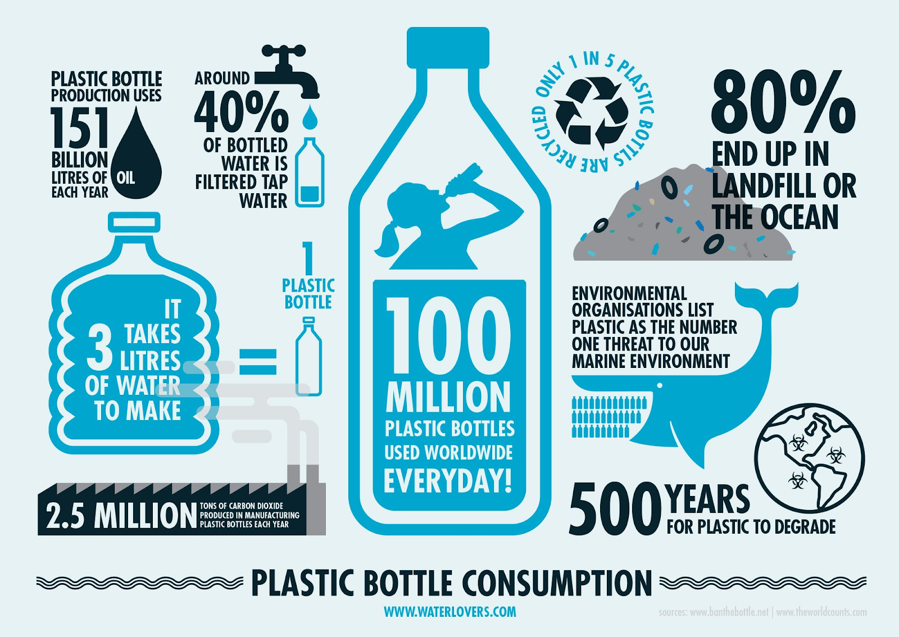
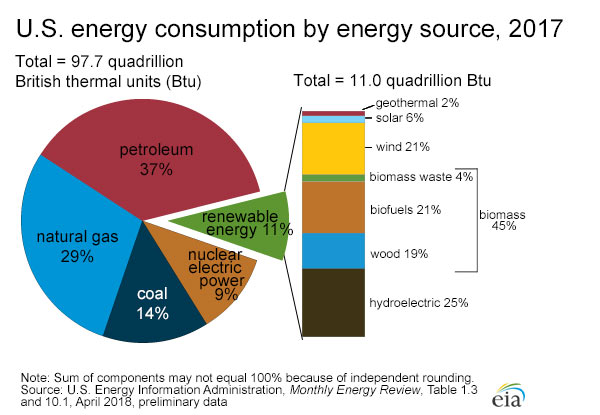

Plastic bottles can take up to 450 years to decompose.
The world currently produces 330 million tons of plastic per year. In 1950 we only produced two-million tons. We are on track to produce one-billion tons of plastic per year by 2050!
Half of the plastic that the world produces is only used once.
The chemicals found in plastics are found in our food, water and the air that we breathe.
Over a million birds and mammals are killed every year by plastics.
- written by Thomas Wright

Clean Energy
Energy
The United States dependence on Coal for energy production has decreased in the last ten years while the amount of renewable energy produces has increased.
Corvallis High School has one-hundred kilowatts of solar panels on its roof that provide 8% of the school's electricity.
Solar panels add value to a property and eventually more than pay back the owner.

Smog
Air Pollution
134 million americans live in areas with a high amount of air pollution. That's two out of every five people who live in the United States.
There are four Oregon cities within the top 50 US cities with the worst ozone pollution.
Go to https://aqicn.org/map/oregon/ to look at the air quality in Oregon cities in real time.
Visit these websites to find more information on the topics listed above